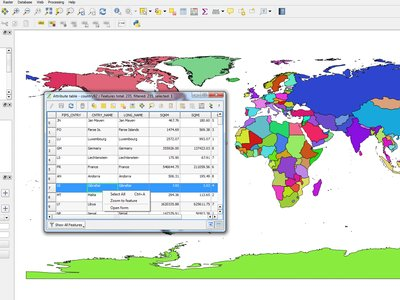
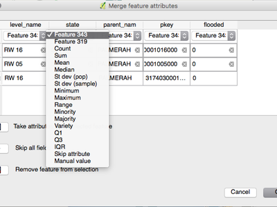
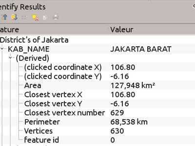
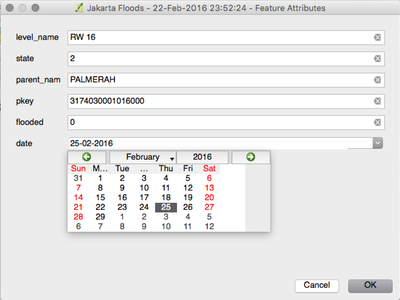
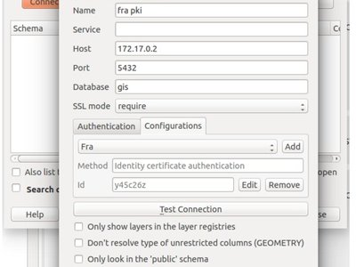
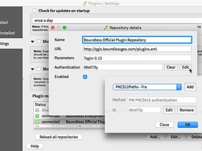
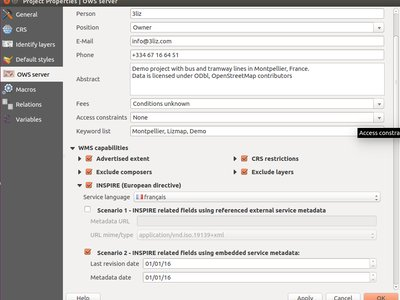

Modifications apportées par QGIS 2.14¶

Voici le journal des modifications de la dernière version de QGIS - version 2.14 “Essen”. Essen était la ville hôte de notre rencontre de développeurs en Octobre 2012 et 2014.
Version maintenue à Long Terme
Ceci est une version spéciale car elle est désignée comme étant une version «LTR» (Version à Long Terme). Les versions LTR seront prises en charge avec des corrections de bugs rétroportés pendant un an, et seront gelées au niveau des fonctionnalité en permanence (c’est à dire qu’aucune nouvelle fonctionnalité ne sera ajoutée, il y aura uniquement des corrections de bogues et des mises à jour mineures). Notez qu’il est en discussion d’étendre à deux ans le support des versions LTR, mais pour des raisons techniques cela ne sera pas effectif avant QGIS 3.2.
L’objectif des versions LTR est de fournir une plate-forme stable et moins sujette aux modifications pour les entreprises et les organisations qui ne veulent pas effectuer plus d’une mise à jour par an des installations des postes des travail utilisateur ou des supports de formation. Le succès de cette version LTR dépend fortement de vous, notre utilisateur bien-aimé. Nous avons notamment besoin de votre soutien pour nous aider à financer la correction de bogues et vous devez également vous assurer que vos contrats de support avec vos fournisseurs indiquent que toutes les corrections de bug gérées par votre contrat sont également appliqués sur la branche LTR ainsi que sur la branche de développement normal.
Si vous pensez que la version LTR est importante, merci de penser à soutenir directement le projet QGIS ou à encourager votre fournisseur commercial pour qu’il utilise la version LTR comme base de votre solution d’entreprise de manière à ce que tout le monde puisse bénéficier d’une plate-forme stable qui sera améliorée et affinée en continu. Pour les utilisateurs et les organisations qui souhaitent bénéficier des toutes dernières évolutions, notre cycle de publication de quatre mois restera inchangé.
Nouvelles Fonctionnalités de QGIS 2.14 “Essen”
Si vous réalisez une mise à jour depuis QGIS 2.8 (notre version LTR précédente), vous trouverez de nombreuses nouvelles fonctionnalités dans cette version. Nous vous encourageons à lire avec attention les modifications précédentes des versions intermédiaires 2.10 et 2.12 car QGIS 2.14 inclue toutes les fonctionnalités publiées dans ces versions également. Comme la version 2.14 vient d’intégrer le dépôt des paquets d’installation en tant que version courante, elle ne remplacera pas tout de suite la version 2.8 dans le dépôt des paquets d’installation de la version LTR. Cela arrivera lorsque la version 2.16 sortira.
A chaque fois que de nouvelles fonctionnalités sont ajoutées au logiciel, elles introduisent potentiellement de nouveaux bugs. Donc, si vous avez des problèmes avec cette version, reportez-les en utilisant le système de suivi de bugs de QGIS.
Remerciements
We would like to thank the developers, documenters, testers and all the many folks out there who volunteer their time and effort (or fund people to do so). From the QGIS community we hope you enjoy this release! If you wish to donate time, money or otherwise get involved in making QGIS more awesome, please wander along to qgis.org and lend a hand!
QGIS is supported by donors and sponsors. A current list of donors who have made financial contributions large and small to the project can be seen on our donors list. If you would like to become an official project sponsor, please visit our sponsorship page for details. Sponsoring QGIS helps us to fund our six-monthly developer meetings, maintain project infrastructure and fund bug fixing efforts. A complete list of current sponsors is provided below - our very great thank you to all of our sponsors!
QGIS est un logiciel libre et vous n’avez aucune obligation de payer quoi que ce soit pour l’utiliser. En fait, nous souhaitons encourager les gens à l’utiliser le plus possible, sans s’intéresser à leur état financier ou à leur statut social. Nous croyons que fournir aux gens des outils décisionnels spatiaux permettra d’améliorer la société. Si vous êtes en capacité d’aider QGIS, vous pouvez  .
.
- Sponsors actuels de QGIS
- Général
- Fonctionnalité : Modification du comportement de la fonction strpos
- Fonctionnalité : Zoom sur l’entité avec un clic-droit dans la table d’attribut
- Fonctionnalité : Amélioration sur la rapidité et la mémoire
- Fonctionnalité : Nouvelles variables d’expression
- Fonctionnalité : Meilleur contrôle du placement des éléments de la carte
- Fonctionnalité : Programme de financement de résolution de bogues
- Fonctionnalité : La calculatrice de champ peut être utilisée pour mettre à jour la géométrie de l’entité
- Fonctionnalité : Nouvelles fonctions dans le générateur d’expressions
- Outils d’analyse
- Explorateur
- Fournisseurs de données
- Fonctionnalité : Cache WMS
- Fonctionnalité : Amélioration de la gestion des géométries courbes
- Fonctionnalité : Meilleure gestion des champs de date et de temps
- Fonctionnalité : Gestion des valeurs Z/M du fournisseur de données de texte délimité
- Fonctionnalité : Édition par groupes de transaction pour PostgreSQL
- Fonctionnalité : Authentification par IGC pour le fournisseur PostgreSQL
- Fonctionnalité : Couches virtuelles
- Fonctionnalité : Plus d’extensions de fichiers pour les sélecteurs de fichiers GDAL et OGR
- Fonctionnalité : Utilisation de ST_RemoveRepeatedPoints pour la simplification du côté serveur des couches PostGIS 2.2 (ou plus)
- Gestion des données
- Fonctionnalité : Suppression de l’extension SPIT
- Fonctionnalité : Export DXF : option pour utiliser le titre à la place du nom en tant que nom de la couche DXF dans l’application bureautique et serveur
- Fonctionnalité : Le type géométrique peut être outrepassé dans la boîte de dialogue d’enregistrement des fichiers vecteurs
- Fonctionnalité : Les jointures entre vecteurs sont maintenant sauvegardées dans les fichiers QLR
- Fonctionnalité : Contrôle de formulaire Ressource Externe
- Fonctionnalité : Relations N:M
- Numérisation
- Étiquettes
- Fonctionnalité : mode de placement « cartographique » des points d’étiquettes
- Fonctionnalité : Appliquer la distance de l’étiquette par rapport aux limites du symbole
- Fonctionnalité : Contrôle de l’ordre de rendu des étiquettes
- Fonctionnalité : Un symbole rendu est maintenant considéré comme un obstacle pour les étiquettes des entités ponctuelles
- Légende des couches
- Composeur de cartes
- Extensions
- Traitements
- Fonctionnalité : Nouveaux algorithmes de la version 2.14
- Fonctionnalité : Assurance Qualité sur les tests unitaires
- Fonctionnalité : Amélioration de la boîte à outils
- Fonctionnalité : Les traitements par lot peuvent être sauvegardés et ouverts ultérieurement à partir de l’interface
- Fonctionnalité : Boîte de dialogue d’algorithme plus complète
- Fonctionnalité : modules GRASS7 v.net
- Programmation
- Fonctionnalité : Amélioration de l’éditeur de fonction d’expression
- Fonctionnalité : Sauvegarder le code Python d’initialisation directement dans le fichier de projet
- Fonctionnalité : Nouvelles options de filtre et de tris pour la classe QgsFeatureRequest
- Fonctionnalité : Options de code Python pour les formulaires personnalisés
- Fonctionnalité : Nouvelles classes PyQGIS 2.14
- Nouvelles classes de base
- Nouvelles classe d’IHM
- QGIS Server
- Fonctionnalité : paramètre STARTINDEX dans la requête WFS GetFeature
- Fonctionnalité : showFeatureCount dans la classe GetLegendGraphic
- Fonctionnalité : Option pour éviter le rendu d’artefacts aux bordures de tuiles
- Fonctionnalité : Vérificateur de configuration des propriétés de projet
- Fonctionnalité : Fourniture de métadonnées INSPIRE WMS
- Fonctionnalité : Ajout d’un nom court pour les couches, les groupes et le projet
- Style
- Fonctionnalité : Assistant de taille pour les largeurs de lignes variables
- Fonctionnalité : Gestion de la transparence dans les paramètres de couleur SVG
- Fonctionnalité : Duplication simplifiée des couches de symbole
- Fonctionnalité : Moteur de rendu 2.5D
- Fonctionnalité : Permettre la définition de l’ordre de rendu des entités
- Fonctionnalité : Générateur de symboles géométriques
- Exemples
- Interface utilisateur
- Fonctionnalité : La table d’attributs peut être rafraîchie
- Fonctionnalité : Modification directe de la couleurs du rendu et des classes de symboles depuis le menu contextuel de légende
- Fonctionnalité : Édition directe des symboles de légende depuis l’arbre des couches
- Fonctionnalité : Afficher/Masquer tous les éléments de légende via le menu contextuel
Sponsors actuels de QGIS¶
  Office of Public Works, Irlande, Irlande (12.2014-12.2016) Office of Public Works, Irlande, Irlande (12.2014-12.2016) |
 GAIA mbH, Allemagne (11.2015-11.2016) GAIA mbH, Allemagne (11.2015-11.2016) |
 Sourcepole AG, Suisse (10.2014-10.2016) Sourcepole AG, Suisse (10.2014-10.2016) |
 AGH University of Science and Technology, Pologne (06.2015-06.2016) AGH University of Science and Technology, Pologne (06.2015-06.2016) |
 State of Vorarlberg, Autriche (03.2013-05.2016) State of Vorarlberg, Autriche (03.2013-05.2016) |
Asociación Geoinnova, Espagne (03.2016-03-2017) |
Gis3W, Italie (01.2014-01.2017) |
GKG Kassel,(Dr.-Ing. Claas Leiner), Allemagne (03.2014-03.2017) |
CawdorForestry Resource Management, Ecosse (02.2016-02.2017) |
ChameleonJohn, USA (02.2016-02.2017) |
2D3D.GIS, France (12.2015-12.2016) |
Dr. Kerth + Lampe Geo-Infometric GmbH, Allemagne (12.2015-12.2016) |
MappingGIS, Espagne (11.2015-11.2016) |
HostingFacts.com, Estonie (12.2015-12.2016) |
Urbsol, Australie (11.2014-11.2016) |
Lutra Consulting, Royaume-Uni (10.2015-10.2016) |
WhereGroup GmbH & Co. KG, Allemagne (08.2015-08.2016) |
|
Nicholas Pearson Associates, Royaume-Uni (07.2015-07.2016) |
QGIS Polska, Pologne (07.2015-07.2016) |
www.terrelogiche.com, Italie (06.2015-06.2016) |
www.geosynergy.com.au, Australie (05.2012-05.2013+06.2015-06-2016) |
Gaia3D, Inc., Corée du Sud (05.2015-05.2016) |
Royal Borough of Windsor and Maidenhead, Royaume-Uni (04.2015-04.2016) |
Chartwell Consultants Ltd., Canada (03.2015-03.2016) |
Trage Wegen vzw, Belgique (03.2015-03.2016) |
GFI - Gesellschaft für Informationstechnologie mbH, Allemagne (03.2015-03.2016) |
GIS-Support, Pologne (02.2015-02.2016) |
ADLARES GmbH, Allemagne (01.2015-01.2016) |
www.molitec.it, Italie (01.2014-01.2016) |
www.argusoft.de, Allemagne (06.2012-06.2013 + 12.2013-12.2015) |
Customer Analytics, USA (12.2014-12.2015) |


Général¶
Fonctionnalité : Modification du comportement de la fonction strpos¶
Le fonctionnement de la fonction strpos a été modifié de manière à ce que lorsque la chaîne recherchée est introuvable, la fonction renvoie une valeur « 0 ». Une valeur de retour différente de zéro indique que la chaîne recherchée a été trouvée à la position renvoyée par la fonction. Dans les versions précédentes de QGIS, la valeur « -1 » indiquait l’absence de chaîne recherchée et d’autres valeurs indiquaient une position du caractère - 1 dans la chaîne d’origine.
Les fichiers de projet des versions précédentes de QGIS doivent être mis à jour pour bénéficier de ce changement.

Cette fonctionnalité a été développée par Jürgen Fischer
Fonctionnalité : Zoom sur l’entité avec un clic-droit dans la table d’attribut¶
Vous pouvez maintenant zoomer sur n’importe qu’elle entité depuis la table d’attributs (sans avoir à sélectionner la ligne avant) en faisant un clic-droit et en sélectionnant Zoomer sur l’entité.

Fonctionnalité : Amélioration sur la rapidité et la mémoire¶
- Sauvegarder un ensemble d’entités sélectionnées depuis une couche volumineuse est maintenant plus rapide.
- La mise à jour des entités sélectionnées depuis la calculatrice de champs est plus rapide.
- Zoom plus rapide sur la sélection pour les couches volumineuses.
- Fonction d’expression
get_featurebeaucoup plus rapide (spécialement lorsqu’une colonne indexée est utilisée). - Les géo-traitements
Sélection par attributetExtraire par attributsont plus rapide d’une magnitude de plusieurs ordres et tirent avantage des index de base de données sur un attribut. - Le géo-traitement
Compter les points dans les polygonesest plus rapide qu’avant. - Filtrer les catégories dans le moteur de rendu catégorisé (ex: afficher seulement certaines catégories et masquer d’autres) est beaucoup plus rapide car seules les entités concernées sont transmises par le fournisseur de données.
- Réduction significative de la consommation mémoire pour les couches vecteurs volumineuses.
Fonctionnalité : Nouvelles variables d’expression¶
Lors du rendu, de nouvelles variables sont maintenant disponibles :
@geometry_part_count: renvoie le nombre de parties qui composent la géométrie en cours de rendu (dans le cas des entités multi-parties).@geometry_part_num: Index (commençant à 1) de la partie de géométrie en cours de rendu.
Les expressions qui suivent sont utiles pour appliquer différents styles à différentes parties d’entités multi-parties :
@map_extent_width: Largeur de la fenêtre de rendu en unités de la carte.@map_extent_height: Hauteur de la fenêtre de rendu en unités de la carte.@map_extent_center: Point central de la fenêtre de rendu en unités de la carte.
Des variables relatives au système d’exploitation ont également été ajoutées :
@qgis_os_name: ex: “Linux”,”Windows” or “OSX”.@qgis_platform: ex “Desktop” or “Server”.@user_account_name: nom (tel que connu par le système d’exploitation) de l’utilisateur actuel.@user_full_name: Nom complet de l’utilisateur actuel (tel que connu par le système d’exploitation, si disponible).

Cette fonctionnalité a été financée par Andreas Neumann (partie sur le système d’exploitation et les variables utilisateur).
Cette fonctionnalité a été développée par Nyall Dawson et Matthias Kuhn
Fonctionnalité : Meilleur contrôle du placement des éléments de la carte¶
QGIS 2.14 dispose d’un contrôle plus fin sur le placement des flèches de nord, des barres d’échelle et de l’affichage du copyright dans le canevas de cartes. Vous pouvez maintenant positionner précisément ces éléments en utilisant différentes unités (incluant les millimètres, les pixels et le pourcentage).

Fonctionnalité : Programme de financement de résolution de bogues¶
Avant chaque publication d’une nouvelle version, nous entretenons un programme de financement de correction de bogues où nous finançons des développeurs pour clore un maximum de bogues. Nous avons décidé de d’inclure un rapport sur les bogues corrigés par ce programme dans les modifications en image. Cette liste n’est pas exhaustive.
- Sandro Santilli: Gel de la connexion PostGIS si vous cliquez sur « Créer un filtre » lors du chargement des données.
- Sandro Santilli: db_manager est incapable de charger des rasters à partir de connexions sans nom de base de données.
- Sandro Santilli: Les extensions de couches ne fonctionnent pas correctement avec la rotation.
- Sandro Santilli: Crash dans la classe QgsGeomColumnTypeThread arrêtant le scan de la connexion #14140 #13806.
- Sandro Santilli: Crash après un changement en masse de la valeur d’attribut dans un fichier shape.
- Sandro Santilli: KMZ entraîne le crash de QGIS (Mac).
- Sandro Santilli: QGIS 2.8.1 crash lors de l’ouverture d’une géodatabase ESRI fichier (FileGDB via openGDB-Driver).
- Sandro Santilli: QGIS crashe lors de la suppression d’un sommet d’une géométrie multi-parties.
- Sandro Santilli: test -V -R qgis_analyzertest erreur de segmentation.
- Sandro Santilli: erreur de segmentation sur output/bin/qgis_diagramtest.
- Sandro Santilli: Problème lorsque la clef primaire contient des valeurs négatives; crashe QGIS lors de l’édition #13958 #14262.
- Sandro Santilli: Le test PyQgsPostgresProvider échoue en l’absence d’une base de données de test.
- Sandro Santilli: Le test TestVectorLayerJoinBuffer échoue si une base de données n’est pas disponible.
- Nyall Dawson: BLOCAGE: Crash lors de l’ouverture des propriétés de la couche pour le couches sans géométrie.
- Nyall Dawson: Problème de filtre côté serveur pour les couches OGR, Oracle et Spatialite.
- Nyall Dawson: BLOCAGE: problème de numérisation de polygone dans la branche master.
- Nyall Dawson: BLOCAGE: erreur de segmentation sur carte de chaleur avec des expressions.
- Nyall Dawson: BLOCAGE: déselctionner une sous-couche d’une symbologie catégorisée désactive le rendu des entités.
- Nyall Dawson: Une image multibande (ex landsat5,7,8) ne peut pas être affichée sous Windows 8.
- Nyall Dawson: BLOCAGE: les polygones courbes ne sont pas dessinés.
- Nyall Dawson: BLOCAGE: l’outil « Fusion d’attributs » ne modifie pas les valeurs lorsqu’elles sont typées.
- Nyall Dawson: Le filtrage de la légende par le contenu est cassé lorsque le rendu contient des symboles dupliqués.
- Nyall Dawson: Correction de problèmes lors de la conversion vers le moteur de rendu basé sur des règles, résultant dans un rendu cassé.
- Nyall Dawson: Correction du rendu catégorisé qui ne stockait pas les changements de source de symbole.
- Nyall Dawson: Éviter un crash de la calculatrice raster avec les rasters volumineux.
- Nyall Dawson: La variable @value du remplissage simple de symbole était modifiée incorrectement dans les expressions.
- Nyall Dawson: Éditer la légende dans le composeur ne fonctionne pas lorsqu’il existe un filtre.
- Nyall Dawson: Comportement erratique dans la suppression des nœuds.
- Nyall Dawson: Correction de la gestion des valeurs de temps dans les attributs.
- Nyall Dawson: Correction de l’ordre des onglets de certaines boîtes de dialogue.
- Nyall Dawson: BLOCAGE: crash lors de l’ajout de plusieurs fichiers depuis le panneau d’exploration.
- Nyall Dawson: L’outil de fusion des entités sélectionnées corrompt les données lorsque les colonnes sont définies comme étant « masquées ».
- Nyall Dawson: Gestion des champs de type LongLong dans la boîte de dialogue de fusion des attributs.
- Nyall Dawson: Correction de l’affichage du détail des calculs de l’outil de mesure (affichage incorrect et non précis pour plusieurs combinaisons de SCR et d’unités).
- Nyall Dawson: La valeur maximale de l’option « augmenter la taille des petits diagrammes » n’était pas suffisante.
- Nyall Dawson: BLOCAGE: Surface non calculée correctement avec la reprojection à la volée.
- Nyall Dawson: Coordonnées lat/lon incohérentes dans le système de projection de coordonnées du projet.
- Nyall Dawson: Permettre à la calculatrice de champs de calculer les surfaces et les longueurs dans les unités plutôt que dans les unités de la carte #12939 #2402 #4857
- Nyall Dawson: Correction de plusieurs outils internes pour le calcul des surfaces de polygone.
- Nyall Dawson: Dans les champs virtuels, la fonction $area renvoyait toujours des valeurs selon l’ellipsoïde « Aucune/planimétrique ».
- Martin Dobias : Couche raster rendue non correctement.
- Martin Dobias : Rendu multi-thread et projection à la volée #11441 #11746
- Martin Dobias : BLOQUANT : Régression dans la boîte de dialogue « sauvegarder sous » pour les fichiers Shape.
- Martin Dobias : Chargement lent de la table des attributs en mode débug.
- Martin Dobias : BLOQUANT : Crash lors du changement du type de rendu.
- Martin Dobias : Moteurs de rendu Python personnalisés #1.
- Martin Dobias : Moteurs de rendu Python personnalisés #2.
- Martin Dobias : Corrections sur le moteur de rendu 2.5D.
- Martin Dobias : Blocage long de l’interface lors de l’initialisation de l’accrochage.
- Martin Dobias: Chargement de données définies depuis un fichier XML.
- Martin Dobias: Correction de DB Manager pour fonctionner avec SpatiaLite < 4.2.
- Martin Dobias: Crash lors du rendu en mode débug.
- Martin Dobias: BLOCAGE: Correction de la sélection/identification dans les vues spatialite #14232 #14233.
- Martin Dobias: BLOCAGE: Correction du glisser-déposer des tables spatialite.
- Jürgen Fischer:Le zoom sur la couche fonctionne de manière incorrecte lors de l’édition d’une couche.
- Jürgen Fischer:Le visualisateur d’aide fonctionne en arrière-plan même lorsqu’aucune aide n’est chargée (ou même lorsque QGIS n’est pas lancé).
- Jürgen Fischer:Le chemin d’index spatial manque pour certains composants.
- Jürgen Fischer:La compilation échoue dans la génération de qgsversion.h.
- Jürgen Fischer:La configufation des contrôles de formulaire est stockée deux fois dans le fichier de projet.
- Jürgen Fischer:L’espace supplémentaire dans l’opérateur « IS NOT » fait que l’expression renvoie la mauvaise sélection.
- Jürgen Fischer:QGIS alloue beaucoup de mémoire et plante lors de l’édition de fichiers shape de taille modeste avec l’outil de nœuds.
- Jürgen Fischer:La reprojection française utilise le fichier ntf_r93.gsb (IGNF:LAMBE etc ..).
- Jürgen Fischer:Numérisation: « Réutiliser les dernières valeurs d’attributs » ne devrait pas écraser la colonne de clef primaire.
- Jürgen Fischer:Problèmes dans la description de l’expression Case.
- Jürgen Fischer:Ecriture des fichiers Shape: les champs de date et heure sont sauvegardés en tant que date ce qui entraîne des pertes de données.
- Jürgen Fischer:Ajout d’aide pour certaines fonctions.
- Jürgen Fischer:Les couches virtuelles ne fonctionnent pas dans Processing.
- Jürgen Fischer:erreur de chargement de fichier de définition de couche.
- Jürgen Fischer:La méthode QgsGeometry::fromWkb échoue si le WKB a une représentation endian différente.
- Jürgen Fischer:Échec de la compilation pour Debian..
- Jürgen Fischer:Le test PyQgsPostgresProvider échoue en absence d’une base de données de test.
- Jürgen Fischer:Accès WKB en dehors des limites.
- Jürgen Fischer:L’import netCDF sous MS-Windows inverse les axes Y, pas de problème sous GNU/Linux OSGeo4W #483.
- Jürgen Fischer:OSGEO4W: Échec de l’installeur en mode non-connecté.
- Jürgen Fischer:OSGEO4W: Les dépendances ne suivent pas sur Windows Server 2003 x64.
- Jürgen Fischer:OSGEO4W: l’installation à partir d’un dépôt local ne vérifie pas les dépendances.
- Jürgen Fischer:OSGEO4W: L’installeur lance le téléchargement et l’installation des paquets avant de proposer une liste de choix des paquets.
- Jürgen Fischer:OSGEO4W: Utilisation de -a pour le mode avancé sélectionne deux options (installation en ligne de commande).
- Jürgen Fischer:OSGEO4W: Téléchargement en boucle de la licence lors de l’installation de szip.
- Jürgen Fischer: Problème sur le fournisseur de données Oracle.
- Jürgen Fischer: corrige le paramètre du chemin vers SAGA.
Fonctionnalité : La calculatrice de champ peut être utilisée pour mettre à jour la géométrie de l’entité¶
La calculatrice de champs peut maintenant être utilisée pour mettre à jour les géométries des entités en utilisant le résultat d’une expression géométrique. C’est très utile pour réaliser des tampons sur un groupe donné d’entités. De plus, les nouvelles fonctions géométriques de QGIS 2.14 ajoutent de nombreuses opérations de manipulation de géométries !

Cette fonctionnalité a été développée par Nyall Dawson
Fonctionnalité : Nouvelles fonctions dans le générateur d’expressions¶
De nouvelles fonctions d’expression ont fait leur apparition dans la version 2.14:
relate: gère la représentation du Modèle Dimensionnel Étendu à 9 Intersections (DE-9IM en anglais), soit en retournant la relation entre deux géométries, soit en testant la relation selon le modèle.- La fonction
make_pointaccepte maintenant des valeurs optionnelles z et m et une nouvelle fonctionmake_point_ma été ajoutée pour la création de géométrie de type PointM. - Les fonctions
metzpermettent de récupérer les valeurs m et z d’une géométrie ponctuelle. - Les nouvelles fonctions
make_lineetmake_polygonpermettent de créer des polylignes et des polygones à partir d’un ensemble de points. reversepermet d’inverser le sens des polylignes.- La fonction
evalpermet d’évaluer une chaîne de caractère représentant une expression. - La fonction
translatepermet d’effectuer une translation selon un décalage x/y - Les fonctions
darkeretlighterqui utilisent un argument de couleur rendent plus claire ou une sombre une couleur selon une valeur donnée. - Les fonctions
radiansetdegreespermettent de convertir des angles en radians ou en degrés. - La fonction
point_on_surfaceretourne un point se trouvant sur la surface d’une géométrie. - La fonction
exterior_ringrenvoie l’anneau extérieur d’une géométrie de type polygone. - La fonction
is_closedrenvoie true si une polyligne est fermée. - Nouvelles fonctions d’accès aux géométries:
geometry_n(renvoie une géométrie donnée depuis une collection),interior_ring_n(renvoie un anneau intérieur depuis un polygone). - La fonction
num_geometriesrenvoie le nombre de géométrie au sein d’une collection. - La fonction
num_ringsrenvoie le nombre d’anneaux d’un objet géométrique polygonal. - La fonction
num_interior_ringsrenvoie le nombre d’anneaux intérieurs d’un polygone. - La fonction
nodes_to_pointspermet de convertir chaque nœud d’une géométrie en une géométrie multi-points. - La fonction
segments_to_linepermet de convertir chaque segment d’une géométrie en une géométrie multi-lignes. - La fonction
closest_pointrenvoie le point le plus proche d’une géométrie par rapport à une seconde géométrie. - La fonction
shortest_linerenvoie la ligne la plus courte reliant deux géométries.
Les fonctions nodes_to_point et segments_to_line ont pour objectif d’être utilisées par le générateur de géométrie, pour par exemple permettre l’utilisation des valeurs m et z pour les nœuds et les lignes de symbologies définies par les données.
Autres améliorations :
- Les géométries et les entités peuvent maintenant être utilisées dans les fonctions conditionnels. Par exemple, vous pouvez maintenant utiliser des expressions du type:
case when $geometry then ... else ...etcase when get_feature(...) then ... else ...

Outils d’analyse¶
Fonctionnalité : Nouvelles fonctions statistiques pour l’outil de fusion d’attributs¶
Lorsque vous utilisez l’outil de fusion d’attributs ou l’outil de fusion d’entités, il existe maintenant d’autres statistiques disponibles permettant d’affecter les résultats des valeurs d’attributs fusionnés. Ces fonctions sont, entre autres, Q1 (1er quartile), Q3 (3ème quartile), écart inter-quartiles, valeurs majoritaires et minoritaires, nombre de valeurs uniques.

Cette fonctionnalité a été développée par Nyall Dawson
Fonctionnalité : les valeurs z/m sont affichées dans l’outil d’identification¶
L’outil d’identification est maintenant capable d’afficher n’importe quelle valeur z ou m pour les entités identifiées. Si l’entité est une ligne ou un polygone, l’outil montrera le numéro de sommet et la valeur x/y/z/m pour le sommet le plus proche du point identifié. L’outil d’identification affiche également le nombre de parties et le numéro de partie des collections géométriques.

Cette fonctionnalité a été développée par Nyall Dawson
Fonctionnalité : Gestion unifiée des unités de distance et de surface et des formats de coordonnées¶
Dans QGIS 2.14, la gestion des différentes options des unités de distance, de surface et d’affichage de coordonnées ont été unifiées, simplifiées et déplacées dans les propriétés du projet. Ce changement permet de nombreux avantages, dont les suivants :
- Le format des coordonnées indiqué dans les propriétés du projet sont utilisées de manière uniforme partout où une coordonnées doit être affichée, incluant l’outil d’identification et la barre d’état.
- Les paramètres des unités de distance et de surface dans les propriétés du projet sont respectées pour l’ensemble des calculs de distance et de surface, incluant l’outil de mesure, les résultats d’identification et l’utilisation des fonctions
$area,$lengthet$perimeter. - D’autres unités de surface ont été ajoutées, comme les yards carrés, les acres, les hectares et d’autres encore.
- De nouvelles unités d’angle ont été ajoutées à l’outil de mesure des angles, incluant les rotations, les minutes et les secondes d’arc.
- Il est maintenant possible d’afficher les coordonnées en latitude et longitude dans la barre d’état lorsqu’on utilise un SCR projeté.

Cette fonctionnalité a été financée par le programme de sponsor de correction de bogues de QGIS.
Cette fonctionnalité a été développée par Nyall Dawson
Explorateur¶
Fonctionnalité : Améliorations de l’explorateur¶
L’explorateur QGIS est un panneau pour l’accès aux fichiers, aux services Web OGC et pour la connexion aux bases de données qui vous permet de glisser-déposer facilement des couches depuis les sources sus-mentionnées directement dans votre canevas de carte (ou dans une fenêtre DB Manager). Deux nouvelles améliorations ont été ajoutées dans cette version:
- Certains chemins peuvent être maintenant masqués depuis le panneau d’exploration. Cela permet de simplifier l’affichage de vos sources de données en affichant uniquement les répertoires qui vous concernent.
- Chargement des projets directement depuis l’explorateur. Vous pouvez maintenant faire un glisser-déposer d’un projet complet dans le canevas de carte de QGIS et il sera chargé.

Cette fonctionnalité a été développée par Nathan Woodrow
Fournisseurs de données¶
Fonctionnalité : Cache WMS¶
QGIS peut maintenant mettre en cache les résultats des requêtes GetCapabilities de manière à réduire fortement le temps de réponse sur les services WMS. Par défaut, la durée de vie du cache est de 24 heures mais vous pouvez la modifier dans l’onglet Réseau de la boîte de dialogue des options de QGIS.

Cette fonctionnalité a été développée par Jürgen Fischer
Fonctionnalité : Amélioration de la gestion des géométries courbes¶
Le fournisseur de données de texte délimité gère maintenant les chaînes de caractères WKT pour les courbes. Le fournisseur de données en mémoire (ex: couches en mémoire temporaires) gère complètement les géométries courbes. Enfin, QGIS a été compilé avec la version 2.0 de GDAL, ce qui permet à QGIS de gérer complètement les géométries courbes pour les formats de fichiers supportés (ex: fichiers GML).

Cette fonctionnalité a été développée par Nyall Dawson
Fonctionnalité : Meilleure gestion des champs de date et de temps¶
QGIS 2.14 améliore la gestion des champs de type date et temps, incluant:
- Les champs de date et heure PostgreSQL sont gérés correctement.
- Le moteur d’expression gère l’ensemble des types de champs de temps.
- Le constructeur d’expression affiche maintenant les pré-résultats pour les dates, les temps, les dates et heures et les intervalles.
- Les champs de temps sont complètement gérés pour les couches vecteurs fichiers (selon le format), PostgreSQL, MS SQL Server et les couches en mémoire temporaire.
- Sauvegarder des couches dans des fichiers vecteurs conserve les champs de date si le format du fichier vecteur le permet (ex: fichiers MapInfo .tab).

Cette fonctionnalité a été développée par Jürgen Fischer et Nyall Dawson
Fonctionnalité : Gestion des valeurs Z/M du fournisseur de données de texte délimité¶
Le fournisseur de données de texte délimité gère maintenant les chaînes de caractères WKT contenant des valeurs Z et M. Par exemple, vous pouvez définir un point avec une valeur z et une valeur de mesure (m) de la manière suivante: POINT ZM (1 1 5 60).

Cette fonctionnalité a été développée par Nyall Dawson
Fonctionnalité : Édition par groupes de transaction pour PostgreSQL¶
Une nouvelle option a été introduite pour permettre l’édition transactionnelle.
Lorsque cette option est activée:
- Toutes les couches de la même base de données sont rassemblées dans un groupe de transaction.
- Lorsque la première couche d’un groupe passe en mode édition, toutes les autres couches sont également mises en mode édition, automatiquement.
- Lorsqu’une couche est éditée, les changements sont envoyés immédiatement à la base de données, ce qui permet aux contraintes et aux déclencheurs d’être appliqués immédiatement.
- Lorsqu’une couche appartenant à un groupe de transaction est validée, toutes les couches sont alors validées (via une transaction dans la base de données)
- Lorsqu’une couche appartenant à un groupe de transaction d’un groupe de couche est remise à l’état initial, toutes les couches sont remises à leur état initial (via une transaction dans la base de données).
Cette fonctionnalité est, pour le moment, expérimentale. Si vous constatez un problème, merci de le faire remonter.
Cette fonction n’est implémentée que pour les bases de données PostgreSQL pour le moment.

Cette fonctionnalité a été financée par SIGE.
Cette fonctionnalité a été développée par Matthias Kuhn, OPENGIS.ch, sur la base du travail réalisé par Sourcepole
Fonctionnalité : Authentification par IGC pour le fournisseur PostgreSQL¶
La possibilité d’utiliser le gestionnaire d’authentification de QGIS introduit dans la version 2.12 a été étendu au fournisseur de données PostgreSQL. Cela permet de se connecter à PostgreSQL en utilisant l’authentification basique ou via une IGC, où les éléments de connexion sont gérés par la configuration QGIS. Cette nouvelle authentification peut également être utilisée dans DB Manager.

Cette fonctionnalité a été financée par Boundless Spatial.
Cette fonctionnalité a été développée par by Luigi Pirelli
Fonctionnalité : Couches virtuelles¶
Des requêtes SQL dynamiques peuvent maintenant être utilisées sur n’importe quel type de couche vecteur que QGIS est capable d’ouvrir, même si le format de la couche ne permet pas les requêtes SQL !
Pour cela, un nouveau type de couche vecteur, appelé « couche virtuelle », est disponible. Ces couches virtuelles sont définies par une requête (incluant la gestion des aggrégats et des jointures) à partir d’autre couches de votre projet. La couche résultante est une vue dynamique du résultat de la requête et toute modification des couches sources sera automatiquement et immédiatement impactée dans la couche virtuelle.
La syntaxe SQL utilisée est celle de SQLite avec les fonctions Spatialite. Les fonctions d’expressions QGIS peuvent également être utilisées dans les requêtes. Tout type de couche vecteur peut être utilisée dans une requête, y compris les couches multiples de différents fournisseurs de données, pour réaliser des jointures.
La gestion des couches virtuelles a été ajoutée dans DB Manager ainsi que la boîte à outils des géotraitements où un nouvel outil “Exécuter SQL” est disponible.

Cette fonctionnalité a été financée par le Ministère de l’Écologie et du Développement Durable français (MEDDE).
Cette fonctionnalité a été développée par Hugo Mercier / Oslandia
Fonctionnalité : Plus d’extensions de fichiers pour les sélecteurs de fichiers GDAL et OGR¶
Pour la gestion des fichiers vecteurs et rasters, QGIS s’appuie sur la bibliothèque GDAL/OGR. Cela signifie que QGIS peut ouvrir pratiquement n’importe quel format pouvant être lu par GDAL ou OGR. Néanmoins, jusqu’à cette version, certaines extensions de ces formats de fichiers n’étaient pas présentes dans les boîtes de dialogue des sélecteurs de fichiers GDAL et d’OGR. Les utilisateurs pouvaient croire que QGIS n’était pas capable d’ouvrir ces formats. Pour minimiser ce problèmes de nouvelles extensions ont été ajoutées aux filtres des sélecteurs de fichiers de GDAL et d’OGR:
Pour les fichiers vecteurs :
- .thf pour le format EDIGEO du cadastre français
- .ods pour le format OpenDocument Spreadsheet de LibreOffice
- .xls pour le format Microsoft Excel
- .xlsx pour le format Microsoft Excel OpenXML
- .xml pour le format NAS - ALKIS
- .map pour le format WAsP
- .pix pour le format PCIDSK
- .gtm et .gtz pour le format GPSTrackMaker
- .vfk pour le format VFK
- .osm et .pbf pour le format OpenStreetMap
- .sua pour le format SUA
- .txt pour le format OpenAir
- .xml pour le format de table Planetary Data Systems
- .htf pour le format Hydrographic Transfer
- .svg pour le format SVG
- .gen pour le format ARCGEN
- .sxf pour le format Storage and eXchange
- .pdf pour le format vecteur PDF Géospatial
- .sgy et .segy pour le format SEG-Y
- .seg, .seg1, .sp1, .uko, .ukooa pour le format SEGUKOOA
- .ovf pour le format de fichier VRT vecteur
- .kmz pour le format KML compressé (KMZ)
- .db3, .s3db, .sqlite3, .db3, .s3db, .sqlite3 pour le format SQLite/Spatialite
- .sl3 pour le format SQLite Spatial (FDO)
- CouchDB spatial (via une URL)
Pour les fichiers raster:
- .ovr pour le format des fichiers VRT raster

Cette fonctionnalité a été développée par Médéric Ribreux
Fonctionnalité : Utilisation de ST_RemoveRepeatedPoints pour la simplification du côté serveur des couches PostGIS 2.2 (ou plus)¶
Lorsque vous utilisez une instance PostGIS 2.2, QGIS utilise maintenant la fonction ST_RemoveRepeatedPoints à la place de la fonction ST_SnapToGrid pour procéder à la simplification des données côté serveur, telle que décrite par Paul Ramsey.
Cette méthode réduit le nombre de sommets d’une géométrie renvoyée à QGIS, ce qui diminue la taille de téléchargement ainsi que le temps nécessaire pour faire le rendu et permet d’économiser de la bande passant entre QGIS et le serveur PostgreSQL.

Cette fonctionnalité a été développée par Michaël Douchin @kimaidou
Gestion des données¶
Fonctionnalité : Suppression de l’extension SPIT¶
L’extension SPIT n’est plus livrée avec QGIS car elle été non maintenue et parce que ses fonctionnalités sont maintenant dépassées par DB Manager et les traitements d’import de base de données.

Cette fonctionnalité a été développée par Nathan Woodrow
Fonctionnalité : Export DXF : option pour utiliser le titre à la place du nom en tant que nom de la couche DXF dans l’application bureautique et serveur¶

Cette fonctionnalité a été financée par la Ville d’Uster.
Cette fonctionnalité a été développée par Jürgen Fischer
Fonctionnalité : Le type géométrique peut être outrepassé dans la boîte de dialogue d’enregistrement des fichiers vecteurs¶
Cela permet d’enregistrer une table sans géométrie avec un type géométrique, de manière à ce que les géométries puissent être ajoutées aux lignes. Auparavant, on ne pouvait le faire directement dans QGIS que via des jointures complexes ou d’autres solutions de contournement.
De plus, des options ont été ajoutées pour forcer que le fichier de sortie soit de type multi-géométrie ou inclue une dimension z.

Cette fonctionnalité a été développée par Nyall Dawson
Fonctionnalité : Contrôle de formulaire Ressource Externe¶
Un nouveau contrôle de formulaire est disponible. Il s’intitule « Ressource Externe » et permet une gestion plus complète des attributs destinés à enregistrer des chemins vers des fichiers. Voici un résumé complet des fonctionnalités de ce contrôle de formulaire:
- Vous pouvez paramétrer un filtre d’extension pour forcer l’enregistrement à certains formats de fichiers. Si un filtre est paramétré, le sélecteur de fichiers n’affichera que les noms de fichiers qui correspondent au filtre (il est toujours possible de sélectionner n’importe quel fichier en utilisant le caractère “*” dans le champ de recherche). La syntaxe du filtre est la même que celle du widget Qt QFileDialog::getOpenFileName.
- Vous pouvez paramétrer un chemin par défaut. Chaque fois qu’un utilisateur utilisera le contrôle de formulaire, un sélecteur de fichier sera ouvert à l’emplacement du chemin par défaut (si ce dernier est paramétré). S’il n’y aucun chemin par défaut, le sélecteur de fichier utilisera le dernier chemin utilisé lors de l’utilisation du contrôle de formulaire « Ressource Externe » précédent. Si le contrôle n’a jamais été utilisé, le sélecteur de fichiers s’ouvrira au niveau du chemin du fichier de projet.
- Vous pouvez définir et paramétrer le stockage des chemins en relatif. Ce mode d’enregistrement vous permettra de conserver uniquement la partie du chemin présente après l’emplacement par défaut (si celui-ci est paramétré) ou après l’emplacement du fichier de projet. Cette fonctionnalité est particulièrement utile lorsque vous souhaitez enregistrer des chemins de fichiers longs dans des attributs avec une taille limitée (comme les attributs textes des fichiers Shapefiles qui sont limité à 254 caractères) ou pour héberger un ensemble fichier projet et fichiers d’archive dans un seul répertoire, pour faciliter la distribution.
- Une autre nouvelle fonctionnalité qui rend le contrôle de formulaire intéressant à utiliser est l’affichage des chemins sous forme de liens hypertextes. En cliquant sur le lien, vous ouvrirez directement le fichier depuis QGIS. Vous pouvez paramétrer cette option pour afficher le chemin complet ou uniquement le nom de fichier. Le fichier sera ouvert avec le logiciel par défaut pour le format du fichier, tel que configuré dans votre système d’exploitation.
- Vous pouvez également utiliser une URL à la place d’un chemin de fichier. Le contrôle de formulaire interprètera l’URL et vous donner la possibilité d’ouvrir le lien directement dans votre navigateur web par défaut.
- Vous pouvez choisir d”enregistrer des noms de répertoires à la place des noms de fichiers.
- Il existe un visualiseur interne de documents dans ce contrôle de formulaire. Vous pouvez l’utiliser pour afficher des images ou des pages web directement dans QGIS. Le sélecteur de fichier du visualiseur interne bénéficie de toutes les options mentionnées ci-dessus.
Pour plus d’informations sur les options de configuration, vous pouvez utiliser les info-bulles de la boîte de dialogue de configuration du contrôle de formulaire.
L’objectif principale de ce nouveau contrôle de formulaire est de corriger les bogues et d’améliorer les deux contrôles de formulaire actuels: “Nom de fichier” et “Photo” et de les remplacer par un seul contrôle uni. Pour le moment, vous pouvez continuer à utiliser les anciens contrôles mais sachez qu’ils seront dépréciés et supprimés dans QGIS 3.0. Nous vous recommandons, dès à présent, de migrer vos fichiers de projet pour qu’ils utilisent le contrôle « Ressource Externe ».
Cette fonctionnalité a été développée par:
- Denis Rouzaud
- Matthias Kuhn à OPENGIS.ch
- Médéric Ribreux

Fonctionnalité : Relations N:M¶
Cette fonctionnalité ajoute la possibilité de gérer des données dans une base de données relationnelle avec des relations N:M (relations plusieurs à plusieurs). Au niveau des formulaires d’édition, les outils d’ajout, de suppression, de création/suppression de lien fonctionne également sur la table liée si une relation est définie comme une relation N:M.
La configuration est réalisée par l’onglet Champs où il est possible de choisir la seconde relation de la relation initiale (s’il existe une relation secondaire par rapport à la table liée).
Limites :
QGIS n’est pas un système de gestion de base de données.
Cette fonctionnalité repose sur le système de base de données sous-jacent. En particulier :
- il s’attend à disposer d’une clause
ON DELETE CASCADEou une contrainte similaire sur la seconde relation. - Il ne gère pas la création de la clef primaire lors de l’ajout d’entités. Soit les utilisateurs doivent être informés de les créer manuellement, soit, s’il s’agit d’une valeur séquencée par la base de données, les couches doivent être en mode transactionnel.

Cette fonctionnalité a été financée par la République et le canton de Neuchâtel, la ville de Pully et la ville de Vevey.
Cette fonctionnalité a été développée par Matthias Kuhn
Numérisation¶
Fonctionnalité : Couleur de numérisation paramétrable¶
Vous pouvez maintenant paramétrer la couleur et la largeur de numérisation.

Fonctionnalité : Outil de tracé assisté¶
Le nouvel outil de tracé est un outil avancé permettant de numériser des entités sur une couche à partir du tracé des entités d’une autre couche.
L’outil de tracé :
- Utilise l’algorithme de chemin le plus court Dijkstra pour trouver les chemins de tracés.
- Peut tracer des routes sur plusieurs entités distinctes.
- Peut être utilisé avec les outils de numérisation avancée (ex: remodeler les entités).
- Peut être activé et désactivé en pression la touche T lors de la numération.
- Est rapide et facile à utiliser.
Vous pouvez en apprendre davantage sur cet outil en lisant cet article et ce tutoriel.
Cette fonctionnalité a été financée par: The Royal Borough of Windsor and Maidenhead, Neath Port Talbot County Borough Council, Ujaval Gandhi, Surrey Heath Borough Council, Matias Arnold, Northumberland National Park Authority, Buccleuch Estates Limited, Countryscape

Cette fonctionnalité a été développée par Lutra Consulting
Étiquettes¶
Fonctionnalité : mode de placement « cartographique » des points d’étiquettes¶
Dans ce mode de placement, les points potentiels d’étiquettes suivent des règles de placement cartographiques idéales. Par exemple, les règles de placement sont priorisées dans l’ordre suivant :
- coin supérieur droit
- coin supérieur gauche
- coin inférieur droit
- coin inférieur gauche
- au milieu à droite
- au milieu gauche
- en haut, décalé légèrement à droite
- en haut, décalé légèrement à gauche
(respectant les règles définies par Krygier et Wood (2011) et d’autres travaux cartographiques)
La priorité de placement peut également être paramétrée pour une entité donnée en utilisant la liste des positions, définie par les données. Cela permet d’utiliser un placement pour certaines entités et pas pour les autres, exemple: les entités sur la côte peuvent empêcher les étiquettes de s’afficher sur les territoires hors d’eau.

Cette fonctionnalité a été financée par Andreas Neumann.
Cette fonctionnalité a été développée par Nyall Dawson
Fonctionnalité : Appliquer la distance de l’étiquette par rapport aux limites du symbole¶
Lorsque ce paramètre est activé, la distance de l’étiquette s’applique à partir des limites du symbole rendu pour le point, à la place du point lui-même. Ceci est particulièrement utile lorsque la taille du symbole est variable (définie par les données) ou bien lorsque différents symboles sont utilisés dans une symbologie catégorisée.
A noter que ce paramètre n’est disponible que pour le nouveau mode de placement de point d’étiquette cartographique.

Cette fonctionnalité a été financée par Andreas Neumann.
Cette fonctionnalité a été développée par Nyall Dawson
Fonctionnalité : Contrôle de l’ordre de rendu des étiquettes¶
Un nouveau contrôle permettant de paramétrer l’index z des étiquettes a été ajouté aux propriétés de la boîte de dialogue des étiquettes. Ce contrôle (qui peut être défini par les données pour chaque entité) détermine l’ordre dans lequel les étiquettes sont rendues. Les couches d’étiquettes avec un index z élevé sont affichées au dessus des étiquettes avec une valeur d’index plus faible.
De plus, la logique a été affinée pour gérer les cas où 2 étiquettes ont un index z identique:
- Si elles sont dans la même couche, une étiquette plus petite sera toujours tracée au dessus de l’étiquette plus large.
- Si elles sont issues de couches différentes, les étiquettes sont tracées dans le même ordre que les couches (pour respecter l’ordre des couches dans la légende).
Les diagrammes ont maintenant également un index z (mais non défini par les données) de manière à pouvoir gérer l’ordre des étiquettes et des diagrammes.
A noter que ce paramètre ne permet PAS d’autoriser le tracé des étiquettes au dessus des entités d’autres couches, il contrôle uniquement l’ordre dans lequel les étiquettes sont tracée à partir du niveau le plus haut de la carte.

Cette fonctionnalité a été développée par Nyall Dawson
Fonctionnalité : Un symbole rendu est maintenant considéré comme un obstacle pour les étiquettes des entités ponctuelles¶
Auparavant, seule l’entité de point elle-même était traitée comme un obstacle pour les étiquettes. Si un symbole de grande taille ou un symbole décalé était utilisé pour représenter le point, les étiquettes pouvaient alors le recouvrir dans recouvrir le point.
Maintenant, la taille et le décalage du symbole rendu sont pris en compte pour la détection de la collision avec les étiquettes. QGIS évite maintenant de tracer des étiquettes sur les symboles de points avec de meilleures conditions.

Cette fonctionnalité a été financée par la Ville d’Uster.
Cette fonctionnalité a été développée par Nyall Dawson
Légende des couches¶
Fonctionnalité : Coller un style à plusieurs couches sélectionnées ou à toutes les couches d’un groupe¶
Cette fonctionnalité permet de coller le style d’une couche à tout un groupe ou à l’ensemble des couches sélectionnées.

Cette fonctionnalité a été développée par Salvatore Larosa
Fonctionnalité : Filtre de légende par expression¶
Il est maintenant possible de filtrer les éléments de la légende par une expression. Cette fonctionnalité a été développée en utilisant les filtres basés sur des règles et la symbologie catégorisée.
Le filtre de légende est disponible depuis le panneau de légende ainsi que pour les éléments de légende du composeur QGIS.

Cette fonctionnalité a été financée par l’Agence de l’Eau Adour-Garonne.
Cette fonctionnalité a été développée par Hugo Mercier / Oslandia
Composeur de cartes¶
Fonctionnalité : Nouvelles options de filtre de légende¶
Cette fonctionnalité introduit deux nouvelles options au filtre de légende.
La première, le filtre par expression, permet aux utilisateurs d’utiliser une expression pour filtrer quelles seront les entités qui seront affichées dans la légende. Seuls les symboles des entités qui correspondent au filtre seront affichés dans la légende.
La seconde option de filtre permet au composeur de filtrer uniquement les éléments qui sont présents dans le polygone de l’atlas courant.

Cette fonctionnalité a été développée par Hugo Mercier (Oslandia)
Fonctionnalité : Chemins supplémentaires pour les modèles de composition¶
Vous pouvez maintenant définir des chemins personnalisés que QGIS peut utiliser pour trouver des modèles de composition. Cela permet par exemple de déposer des modèles sur un répertoire réseau partagé et donner à vos utilisateurs l’accès à ce répertoire tout en permettant l’accès au répertoire local déjà existant sur le système. Pour gérer ce chemin, allez dans Préférences -> Options -> Composeur d'impression.

Cette fonctionnalité a été développée par Nathan Woodrow
Fonctionnalité : Sélection multiple dans le gestionnaire de compositions¶
Le gestionnaire de composition permet de gérer plusieurs compositions en même temps. Vous pouvez maintenant ouvrir et supprimer plusieurs compositions en utilisant la touche Ctrl pour sélectionner plusieurs compositions dans la liste.

Cette fonctionnalité a été développée par Médéric Ribreux
Extensions¶
Fonctionnalité : Gestion du système d’authentification pour le gestionnaire d’extensions¶
La gestion du nouveau système d’authentification a été ajoutée au gestionnaire d’extension. Cela permet aux utilisateurs d’utiliser des configurations d’authentification pour se connecter à des dépôts d’extension. Cela permet également aux administrateurs systèmes de créer un accès authentifié à des dépôts d’extension ou à authentifier le téléchargement de certaines extensions.

Cette fonctionnalité a été financée par Boundless Spatial.
Cette fonctionnalité a été développée par Larry Shaffer
Traitements¶
Fonctionnalité : Nouveaux algorithmes de la version 2.14¶
Géotraitements QGIS :¶
- Lisser une géométrie: permet de lisser des couches de polylignes ou de polygones.
- Inverse la direction des lignes.
Géoalgorithmes GDAL/OGR :¶
- gdal2tiles: construit un répertoire de tuiles TMS, KMLs ou incluant une simple visualisation web.
- gdal_retile: re-tuile un ensemble de tuiles ou construit des pyramides tuilées.
Fonctionnalité : Assurance Qualité sur les tests unitaires¶
Pour garantir une stabilité à long terme du module Processing (NDT: module des géotraitements), un nouveau cadre de test a été introduit.
Les géo-traitements de Processing sont exécutés après chaque changement du code source de QGIS et le résultat des tests est comparé à un jeu de données de contrôle pour garantir le fonctionnement correct de chaque traitement. Cela permet d’identifier immédiatement toute régression.
Il est possible (et requis) d’ajouter d’autres tests. Vous pouvez en lire davantage sur comment participer à la création de tests unitaires pour Processing.

Cette fonctionnalité a été financée par le projet QGIS.
Cette fonctionnalité a été développée par Matthias Kuhn, OPENGIS.ch.
Fonctionnalité : Amélioration de la boîte à outils¶
L’interface simplifiée a été supprimée et un système plus orienté utilisateur a été mis en place pour mieux accéder aux algorithmes. La fonction de recherche d’algorithmes recherche également dans les fournisseurs de traitements désactivés et vous suggère de les activer.

Cette fonctionnalité a été financée par Boundless Spatial.
Cette fonctionnalité a été développée par Víctor Olaya
Fonctionnalité : Les traitements par lot peuvent être sauvegardés et ouverts ultérieurement à partir de l’interface¶

Fonctionnalité : Boîte de dialogue d’algorithme plus complète¶
Une courte description est maintenant affichée à côté des paramètres de l’algorithme rendant plus facile la compréhension de l’action de l’algorithme.
Les traitements par lots peuvent maintenant être lancés par la boîte de dialogue de l’algorithme en utilisant le bouton “Exécuter comme traitement par lot…”

Fonctionnalité : modules GRASS7 v.net¶
Le module Processing de QGIS 2.14 incorpore maintenant les modules GRASS v.net (uniquement pour GRASS7). Ces modules constituent un ensemble d’algorithmes gérant les couches vecteurs linéaires de graphes (réseau). Un graphe est un ensemble de sommets (ou de nœuds ou de points) liés entre eux avec un ensemble de segments (ou arcs ou lignes). L’ensemble des segments est souvent dénommé réseau.
Grâce aux modules v.net, vous pouvez facilement calculer le chemin le plus court entre un ensemble de nœuds du réseau ou encore calculer une carte isochrone à partir d’un jeu de points centraux. Vous pouvez également résoudre facilement le complexe problème du voyageur de commerce à partir d’un réseau et d’un ensemble de points d’étape.
Les algorithmes v.net utilisent généralement une couche vecteur linéaire (pour le réseau) et une couche de points qui représente les nœuds sur lesquels vous souhaitez réaliser le traitement. Assurez-vous d’utiliser une couche vecteur linéaire qui soit vraiment un réseau (les segments doivent être connectés par des sommets sans intersection entre segments) pour éviter tout problème. Vous pouvez également utiliser un attribut de la couche de réseau pour définir les coûts (le contenu de l’attribut est utilisé pour calculer le coût de transport le long du segment).
Voici un résumé rapide des différents algorithmes qui ont été inclus dans Processing:
- v.net.alloc : créé des sous-réseaux à partir de nœuds centraux.
- v.net.allpairs : Calcule le chemin le plus court entre toutes les paires de nœuds sur le réseau.
- v.net.arcs : Créé des arcs à partir d’un fichier de points.
- v.net.articulation : Calcule les points d’articulation sur le réseau.
- v.net.bridge : Calcule les ponts du réseau.
- v.net.centrality: Calcule le degré, la centralité, la proximité et la centraluté par vecteur eigen de chaque nœud du réseau.
- v.net.components : Calcule les éléments connectés de manière fortes et faibles sur le réseau.
- v.net.connect : Connecte des points (nœuds) aux arcs les plus proches du réseau (et ajoute des segments si nécessaire).
- v.net.connectivity: Calcule la connectivité des sommets entre deux jeux de nœuds sur le réseau.
- v.net.distance: Calcule le chemin le plus court par le réseau entre deux jeux de nœuds.
- v.net.flow: Calcule le flux maximal entre deux jeux de nœuds sur le réseau.
- v.net.iso: Calcule une carte isochrone du réseau à partir d’un ensemble de nœuds.
- v.net.nodes : extrait les nœuds d’une couche de réseau/graphe.
- v.net.nreports : Renvoie des informations sur les nœuds du réseau.
- v.net.path : Trouve le chemin le plus court sur le réseau entre deux nœuds.
- v.net.report : Renvoie des informations sur les segments d’un réseau.
- v.net.salesman : Calcule le chemin du voyageur de commerce à partir d’un ensemble de nœuds sur le réseau.
- v.net.spanningtree : Calcule l’arbre couvrant via l’algorithme spanning tree d’un réseau.
- v.net.steiner : Créé un arbre de Steiner à partir d’un réseau et d’un ensemble de nœuds.
- v.net.visibility: Calcule le graphe de visibilité.
Utilisez l’onglet d“« Aide » de chaque algorithme pour lire directement l’aide officielle de GRASS7.

Cette fonctionnalité a été développée par Médéric Ribreux
Programmation¶

Fonctionnalité : Sauvegarder le code Python d’initialisation directement dans le fichier de projet¶
Ajout d’une option et d’un éditeur de code pour la fonction d’initialisation des formulaires, directement dans le projet (et aussi en base de données étant donné qu’il s’agit d’une donnée embarquée dans le style).

Fonctionnalité : Nouvelles options de filtre et de tris pour la classe QgsFeatureRequest¶
La classe QgsFeatureRequest gère maintenant une limite supérieure d’entités renvoyées. Dans bien des cas, cette limite est transmise au fournisseur de données, ce qui permet des gains de performances significatifs lorsque seul un certain nombre d’entités est nécessaire.
De plus, QgsFeatureRequest gère maintenant l’ordre dans lequel sont renvoyées les entités. De même, en règle générale, le critère d’ordre est transmis au fournisseur de données pour que ce soit le serveur qui le gère directement (performances optimisées).

Fonctionnalité : Options de code Python pour les formulaires personnalisés¶
Cette fonctionnalité amène de nouvelles options pour le code Python des formulaires personnalisés :
- Chargement depuis un fichier (avec une boîte de sélection de fichier).
- Chargement depuis l’environnement (comme une extension ou une fonction d’initialisation Python).
- Directement en entrant le code dans un contrôle (nouvelle option).
Les options de configuration, incluant le code Python stocké en interne du projet ainsi que les paramètres de style QML peuvent être exportés/restaurés à partir d’une base de données.

Cette fonctionnalité a été financée par ARPA Piemonte.
Cette fonctionnalité a été développée par Alessandro Pasotti (ItOpen)
Nouvelles classes de base¶
- QgsAttributeEditorElement - abstract base class for any elements of a drag and drop form
- QgsAttributeEditorContainer - container for attribute editors, used to group them visually in an attribute form
- QgsAttributeEditorField - element for loading a field’s widget onto a form
- QgsAttributeEditorRelation - element for loading a relation editor widget onto a form
- QgsEditFormConfig - stores and sets configuration parameters for attribute editor forms
- QgsFeatureFilterProvider - provides an interface for modifying a QgsFeatureRequest in place to apply additional filters to the request
- QgsTracer - provides graph creation and shortest path search for vector layers
- QgsTransactionGroup - interface for grouping layers into single edit transactions
- QgsUnitTypes - helper functions for various unit types and conversions between units (eg distance and area units)
- QgsVirtualLayerDefinition - class for manipulating the definitions of virtual layers
- QgsVirtualLayerDefinitionUtils - helper utilities for working with QgsVirtualLayerDefinition objects
- Qgs25DRenderer - 2.5D symbol renderer
- QgsGeometryGeneratorSymbolLayerV2 - geometry generator symbol layer
- QgsFeatureRequest.OrderByClause - class for specifying a field sort order for feature requests
- QgsFeatureRequest.OrderBy - a prioritized list of order by clauses for sorting
Nouvelles classe d’IHM¶
Contrôles réutilisables¶
- QgsExternalResourceWidget - widget for displaying a file path with a push button for an « open file » dialog, and optional display of pictures or HTML files
- QgsFileWidget - widget for selecting a file or a folder
- QgsLegendFilterButton - tool button widget that allows enabling or disabling legend filter by contents of the map
- QgsMapCanvasTracer - an extension of QgsTracer that provides extra functionality for interacting with map canvases
- Qgs25DRendererWidget - widget for setting properties for a 2.5D renderer
- QgsColorWidgetAction - widget action for embedding a color picker inside a menu
Boîtes de dialogues réutilisables :¶
- QgsStyleV2GroupSelectionDialog - dialog for grouping selections in a style
- QgsGroupWMSDataDialog - dialog for setting properties for a WMS group
- QgsOrderByDialog - dialog for specifying sort ordering of fields
QGIS Server¶
Fonctionnalité : paramètre STARTINDEX dans la requête WFS GetFeature¶
STARTINDEX est un standard de WFS 2.0 mais il s’agit d’une extension pour WFS 1.0, implémentée dans QGIS Server.
L’option STARTINDEX peut être utilisée pour éviter de charger certaines entités dans le résultat de la requête. En combinaison avec MAXFEATURES, cela permet d’utiliser une requête WFS GetFeature pour naviguer de page en page. STARTINDEX=0 indique de commencer à la première entité.
Cette fonctionnalité a été développée par 3Liz
Fonctionnalité : showFeatureCount dans la classe GetLegendGraphic¶
Ajout d’un paramètre non standard showFeatureCount pour ajouter le décompte des entités dans la légende. Pour l’activer, showFeatureCount peut être paramétré à TRUE ou à 1.
Cette fonctionnalité nécessite un serveur X.

Cette fonctionnalité a été développée par 3Liz

Fonctionnalité : Vérificateur de configuration des propriétés de projet¶
Pour faciliter la configuration d’un projet pour QGIS Server, un nouveau vérificateur de configuration a été ajouté dans les propriétés du projet.
Les tests de vérification gèrent:
- Les noms dupliqués ou les alias utilisés comme des noms OWS.
- Les noms OWS invalides.
- L’encodage manquant pour les couches vecteur.

Cette fonctionnalité a été financée par l’Ifremer.
Cette fonctionnalité a été développée par 3Liz
Fonctionnalité : Fourniture de métadonnées INSPIRE WMS¶
Dans les propriétés du projet, l’utilisateur peut:
- Activer les métadonnées INSPIRE
- Choisir la langue du service à partir des 24 langues officielles de l’Union Européenne et 5 langues régionales.
- Choisir le scénario du service de métadonnées et indiquer leurs paramètres.
Le service WMS 1.3.0 (de QGIS Server) reflètera la configuration INSPIRE du projet.

Cette fonctionnalité a été développée par 3Liz
Fonctionnalité : Ajout d’un nom court pour les couches, les groupes et le projet¶
Un certains nombre d’éléments disposent d’un Nom et d’un Titre. Le nom est une chaîne de caractères utilisée dans la communication de machine à machine alors que le titre est utilisé pour les êtres humains. Par exemple, un jeu de données peut avoir un titre descriptif Température Atmosphérique Maximum et être requêté par le nom abrégé ATMAX.
L’utilisateur peut déjà ajouter un titre pour les couches et le projet. Dans les services Web OpenGeoSpatial, OWS (WMS, WFS, WCS), le nom est basé sur le nom utilisé dans l’arbre des couches. Ce nom est plus une étiquette pour les humains qu’un nom de machine à machine.
Pour ajouter la possibilité aux utilisateurs de définir le Nom en tant que texte destiné aux ordinateurs, cette fonctionnalité ajoute :
- L’édition de nom court dans les propriétés de la couche.
- Boîte de dialogue WMS pour les groupes (permet de saisir le nom court du groupe, le titre et un résumé).
- L’édition de nom court dans les propriétés du projet.
- Ajout d’un validateur de fonction rationnelles « ^[A-Za-z][A-Za-z0-9._-]* » pour les éditions de noms courts (via une méthode statique).
- Ajout d’un élément TreeName dans les propriétés du projet (fullProjectSettings).
Si un nom court a été utilisé pour des couches, des groupes et pour le projet, il sera utilisé par QGIS Server pour définir le nom de la couche.

Cette fonctionnalité a été développée par 3Liz
Style¶

{kind=link}
Fonctionnalité : Gestion de la transparence dans les paramètres de couleur SVG¶
Les fichiers SVG non fournis par QGIS doivent disposer des attributs :
fill-opacity="param(fill-opacity)"
et
stroke-opacity="param(outline-opacity)"
pour autoriser la transparence dans le SVG.
Cette fonctionnalité a été développée par Nyall Dawson
Fonctionnalité : Duplication simplifiée des couches de symbole¶
A nouveau bouton « Dupliquer la couche courante » a été ajouté dans la boîte de dialogue des propriétés de symbole. Il permet de dupliquer facilement les couches de symboles.

Cette fonctionnalité a été développée par Nyall Dawson
Fonctionnalité : Moteur de rendu 2.5D¶
Il ajoute une interface de configuration et un moteur de rendu pouvant générer un style composé qui produit un effet 2.5D.
Il permet de configurer le style et il a été créé pour rester simple dans son utilisation.
Sachant que chaque partie de ce système est construit au dessus du moteur de rendu interne de QGIS, il peut bien entendu être finement configuré. Pour obtenir toutes les options de configuration, modifiez le rendu 2.5D vers un rendu catégorisé, gradué ou à symbologie simple une fois l’effet 2.5D créé et vous pourrez alors modifier cet effet selon vos besoins.
Cette fonctionnalité a été développée par:
- Matthias Kuhn à OPENGIS.ch
Cette fonctionnalité a été financée par:
- Conseil Régional de Picardie (France)
- ADUGA
- Ville de Nyon
- Wetu GIT cc

Fonctionnalité : Permettre la définition de l’ordre de rendu des entités¶
Lorsque les entités doivent être gérées dans un certain ordre, ce dernier peut être indiqué en utilisant une expression arbitraire.
Elle peut être configurée dans la boîte de dialogue de la configuration de la symbologie de la couche et peut être basée sur un champ ou sur une expression complexe.
On peut également contrôler l’ordre ascendant ou descendant ainsi que la gestion des valeurs NULL (traitées en premier ou en dernier).
Lorsque c’est possible, la requête est envoyée à la base de données (en fonction de la complexité de l’expression ainsi que du type de fournisseur de données pour la couche). S’il n’es pas possible d’envoyer la requête directement à la base de données, le tri et l’ordre sont gérés localement.
Cette fonctionnalité est utilisée dans le moteur de rendu 2.5D pour faire le rendu des entités en se basant sur leur distance par rapport à la « caméra ».
Elle est également disponible pour les extensions :
layer.getFeatures( QgsFeatureRequest().setOrderBy( 'name' ) ) -- alphabetical by name
Cette fonctionnalité a été développée par : Matthias Kuhn, OPENGIS.ch Cette fonctionnalité a été financée par: Conseil Régional de Picardie, ADUGA, Ville de Nyon, Wetu GIT cc

Cette fonctionnalité a été développée par Matthias Kuhn, OPENGIS.ch.
Fonctionnalité : Générateur de symboles géométriques¶
Le générateur de symboles géométriques permet d’utiliser le moteur des expressions pour modifier la géométrie avant de faire le rendu ou bien de créer de nouvelle géométries selon les attributs des entités.
Il peut être utilisé en combinant tout type d’opérateur spatial tel que buffer, translate, intersect ou extrude avec des paramètres basés sur des attributs, simplement pour le rendu, sans modifier aucunement les données source.
Exemples¶
Translation d’une géométrie.¶
Utilisé pour le toit du moteur de rendu 2.5D
translate( $geometry, 10, 10 )
Remplissage de la bordure des polygones.¶
La syntaxe suivante permet de générer un polygone qui représente la bordure extérieure du polygone d’origine (voir l’image en exemple).
difference( buffer( $geometry , 250 ), buffer( $geometry, -250 ) )
Différentes couches de symboles peuvent contenir différents générateurs géométriques permettant d’afficher différentes versions d’une même géométrie en même temps. Le moteur de rendu 2.5D est un exemple de ce genre d’utilisation.

Cette fonctionnalité a été financée par le Conseil Régional de Picardie, ADUGA, la Ville de Nyon et Wetu GIT cc
Cette fonctionnalité a été développée par Matthias Kuhn, OPENGIS.ch.
Interface utilisateur¶
Fonctionnalité : La table d’attributs peut être rafraîchie¶
Une option permettant de recharger les attributs de la table d’attributs est maintenant disponible.

Fonctionnalité : Modification directe de la couleurs du rendu et des classes de symboles depuis le menu contextuel de légende¶
Affiche un contrôle de choix de couleur dans le menu, ce qui vous permet de choisir interactivement une couleur pour un symbole sans avoir à ouvrir la boîte de dialogue concernée !

Cette fonctionnalité a été développée par Nyall Dawson
Fonctionnalité : Édition directe des symboles de légende depuis l’arbre des couches¶
Cette fonctionnalité ajouter une entrée de menu « Modifier le symbole » dans le menu contextuel pour les éléments de légende (pour chaque catégorie du moteur de rendu catégorisé). Sélectionner cette entrée ouvre une boîte de dialogue d’édition du symbole qui permet d’éditer directement les classes de symbole. Cette fonctionnalité est plus rapide que d’ouvrir les propriétés de la couche et d’aller dans l’onglet de style. Vous pouvez également double-cliquer sur un des éléments de légende pour ouvrir directement l’éditeur de symbole.

Cette fonctionnalité a été développée par Nyall Dawson
Fonctionnalité : Afficher/Masquer tous les éléments de légende via le menu contextuel¶
Permet d’activer ou de désactiver tous les éléments de symbole pour les couches catégorisées, graduées ou basées sur des règles via le menu contextuel sur un élément. Auparavant, vous deviez manuellement activer/désactiver chaque classe manuellement.

Cette fonctionnalité a été développée par Nyall Dawson